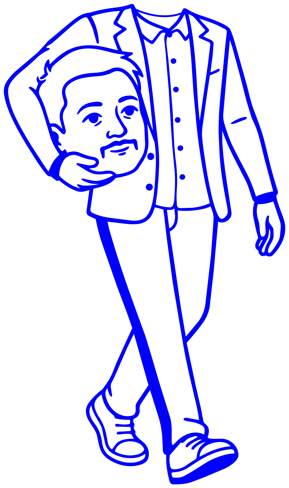
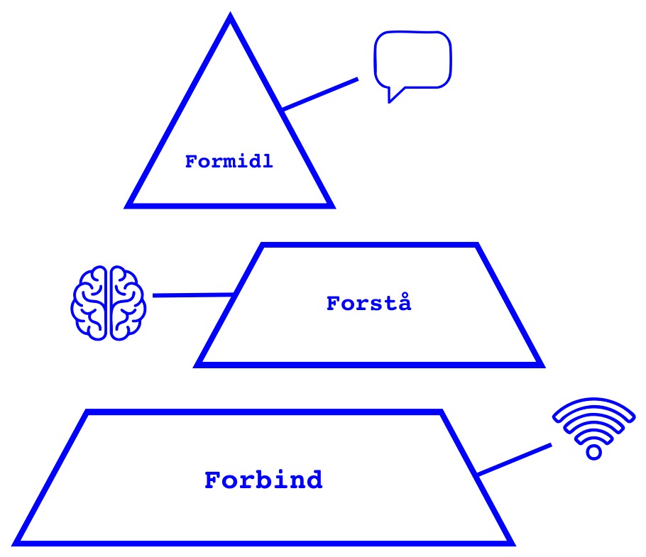
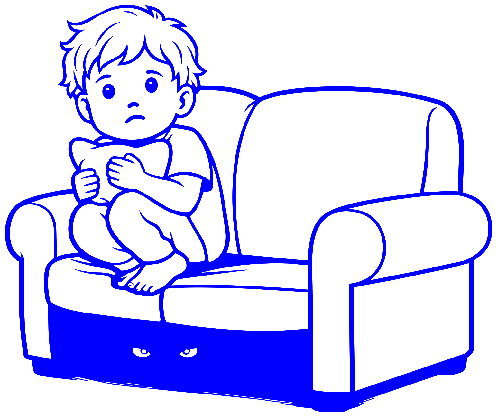
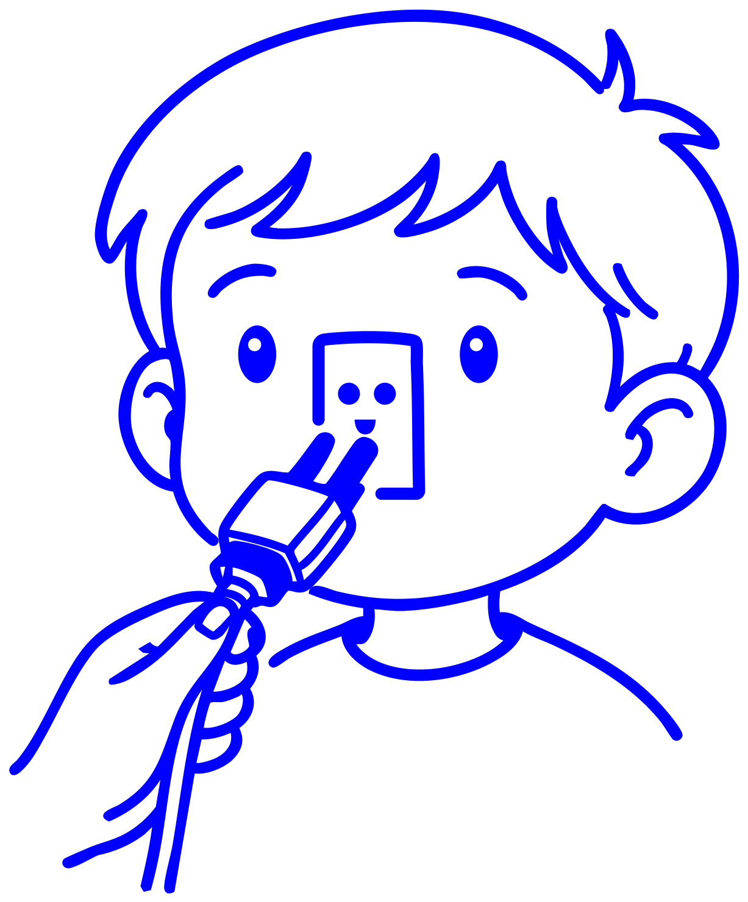

DET GAMLE ORDBarnet er trodsigt.
↓
SYSTEMETS FORKLARINGBarnets system er overbelastet.
MULIG REAKTIONSænk kravene, skab ro, og hjælp barnet tilbage i forbindelse.
SÅDAN SIKRER DU DEN BEDSTE START PÅ LIVET
Brugermanual til dit barn giver dig et enkelt og præcist sprog for det, der sker i dit barn. En intuitiv brugerflade til den vigtigste viden om børn, udvikling og relationer.

FORÆLDRE MANGLER IKKE MERE VIDEN
Der findes enormt meget viden om børns udvikling. Vi har ikke brug for mere af den — vi har brug for en bro mellem videnskaben og hverdagen. Den bro er bogen.

HVAD FÅR FORÆLDRENE UD AF BOGEN?
Forstå, hvad der ligger bag barnets reaktion
Opdage overbelastning tidligere
Reagere mere præcist i konflikter
Bevare mere af dit eget overblik
Bruge færre vurderende ord om barnet
Genetablere forbindelsen efter en konflikt
Omsætte kompliceret viden til konkrete handlinger
Få et fælles sprog med partneren og andre voksne
SÅDAN VIRKER SPROGET
Sproget erstatter ikke den videnskabelige forklaring — det gør den brugbar. Det sprog, du griber til, ændrer det, du ser, og det, du forstår om situationen. Også når du selv er overbelastet.

DET VIDENSKABELIGE FUNDAMENT
Vi har opfundet ingen ny videnskab og absolut ingen nye pædagogiske teorier. Videnskaben om tilknytning, mentalisering, affektregulering og nervesystemets udvikling er den samme. Det, vi har gjort, er at give brugergrænsefladen til den vigtige videnskab en ordentlig omgang opgradering.
Videnskaben er smuk. Virkeligheden kaster med havregrød.

HVAD ANDRE SIGER
Idéen om at gøre psykologisk viden mere forståelig og anvendelig i hverdagen er både vigtig, sjov og original.
Lene Tanggaard, ph.d. og professor i psykologi
Manualen er sjov, varm og indsigtsfuld. Den oversætter børnepsykologi til noget, jeg som far til en 3-årig med store følelser faktisk forstår og kan bruge — og så er den enormt brugervenlig.
Mike Wittrup, kreativ direktør
Et tiltrængt og mere intuitivt sprog til forbindelsen mellem børn og voksne, både i hverdagens gyldne øjeblikke og svære stunder.
Kasper Janus Jensen, vuggestuepædagog og familieterapeut
HVAD VIL DU GERNE FORSTÅ?
Spørgsmålene besvares af Dorte og Niels som mennesker — ikke af AI. Udvalgte spørgsmål kan blive besvaret på hjemmesiden eller i nyhedsbrevet.
SYSTEMARKITEKTUREN BAG MANUALEN
Brugermanualen er brugerfladen. HUREOS™ er det, der ligger bagved.
Den intuitive, varme og anvendelige guide til hverdagens udfordringer, relationer og menneskelig forståelse.
Den strukturelle, adfærdsvidenskabelige systemarkitektur bag manualen — de psykologiske, pædagogiske og neurobiologiske principper og metoder, den er bygget på.

PRINCIPIA
Manualens grundlag. De aksiomer og love, hele systemet hviler på — skrevet med akademisk alvor og et glimt i øjet, for enhver der tager sin egen kerne for alvorligt, har allerede misforstået pointen.
Intet menneske lever i et vakuum. Ethvert individ opererer i et felt af bevidste og ubevidste impulser, familiekoder, sociale kontrakter og biologiske betingelser.
Brugerfladen er under konstant udvikling. Det, der modstår forenkling, er ikke en systemfejl — manualens opgave er at gøre det forståelige anvendeligt, ikke at benægte det uforståelige.
Brugermanualen er et redskab, ikke et facit. Den eksekverer intet af sig selv. Det gør læseren — og helst med et glimt i øjet.
Systemet opererer på tværs af tre dimensioner:
Det neurobiologiske hardware-lag: søvn, ernæring, stress-tærskler, kroppens krav til vedligehold.
Det mentale software-lag: tanker, ord, sprog, indre modeller, narrativer og gamle familiekoder.
Det relationelle lag: mødet med omverdenen, opdragelse, nære relationer og forbindelsen mellem mennesker.
Affectus — følelser — er ikke et fjerde, sideordnet lag, men det der bevæger sig gennem alle tre og binder dem sammen.
§4. Ingen opdatering af kernen holder, hvis den kun passerer gennem én port. Enhver indsigt skal, for at blive brugbar, igennem:
Er det logisk? Giver det mening?
Er det varmt og menneskeligt? Kan jeg mærke det?
Kan jeg grine lidt af mig selv over det?
"Manualen er ikke et facit, men en ramme at udvikle sig selv og sine relationer indenfor — bedst eksekveret med hjerne, hjerte og et glimt i øjet."